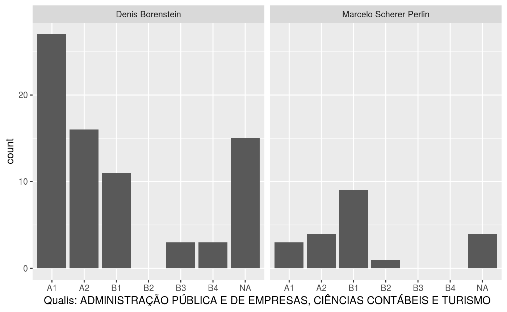

vignettes/gld_vignette-ReadLattes.Rmd
gld_vignette-ReadLattes.RmdLattes is an unique and largest platform for academic curriculumns. There you can find information about the academic work of all Brazilian scholars. It includes institution of PhD, current employer, field of work, all publications metadata and more. It is an unique and reliable source of information for bibliometric studies.
I’ve been working with Lattes data for some time. Here I present a short list of papers that have used this data.
Is predatory publishing a real threat? Evidence from a large database study. Scientometrics
The Brazilian scientific output published in journals: A study based on a large CV database. Journal of Informetrics
The researchers, the publications and the journals of Finance in Brazil: An analysis based on resumes from the Lattes platform. Brazilian Review of Finance
Análise do Perfil dos Acadêmicos e de suas Publicações Científicas em Administração (in Portuguese. RAC
Package GetLattesData is a wrap up of functions I’ve been using for accessing the data. In the past, one could download the data directly, without any manual work. Currently, 2018-11-01, a manual captcha break is necessary. Therefore, using this package requires the manual download of the zip files with the xml data.
Let’s consider a simple example of accessing information about my academic CV and a coleague. Both zip files are available within the package as an example.
Since I work in the business department of UFRGS, the impact of my publications is localy set by the Qualis ranking of Management, Accounting and Tourism ('ADMINISTRAÇÃO PÚBLICA E DE EMPRESAS, CIÊNCIAS CONTÁBEIS E TURISMO'). Qualis is the local journal ranking in Brazil. You can read more about Qualis in Wikipedia and here.
Now, based on the zip file locations and field of Qualis, we use GetLattesData to access information available in Lattes:
library(GetLattesData)
# get files from pkg (you can download from other researchers in lattes website)
f.in <- c(system.file('extdata/3262699324398819.zip', package = 'GetLattesData'),
system.file('extdata/8373564643000623.zip', package = 'GetLattesData'))
# set qualis
field.qualis = 'ADMINISTRAÇÃO PÚBLICA E DE EMPRESAS, CIÊNCIAS CONTÁBEIS E TURISMO'
# get data
l.out <- gld_get_lattes_data_from_zip(f.in,
field.qualis = field.qualis )##
## Reading 3262699324398819.zip - Marcelo Scherer Perlin
## Found 21 published papers
## Found 2 accepted paper(s)
## Found 10 supervisions
## Found 2 published books
## Found 0 book chapters
## Found 17 conference papers
## Reading 8373564643000623.zip - Denis Borenstein
## Found 75 published papers
## Found 2 accepted paper(s)
## Found 97 supervisions
## Found 1 published books
## Found 6 book chapters
## Found 89 conference papersThe output my.l is a list with the following dataframes:
names(l.out)## [1] "tpesq" "tpublic.published" "tpublic.accepted"
## [4] "tsupervisions" "tbooks" "tconferences"The first is a dataframe with information about researchers:
tpesq <- l.out$tpesq
str(tpesq)## 'data.frame': 2 obs. of 9 variables:
## $ name : chr "Marcelo Scherer Perlin" "Denis Borenstein"
## $ last.update : Date, format: "2018-09-24" "2018-08-24"
## $ phd.institution: chr "University of Reading" "University of Strathclyde"
## $ phd.start.year : num 2007 1991
## $ phd.end.year : num 2010 1995
## $ country.origin : chr "Brasil" "Brasil"
## $ major.field : chr "CIENCIAS_SOCIAIS_APLICADAS" "ENGENHARIAS"
## $ minor.field : chr "Administração" "Engenharia de Produção"
## $ id.file : chr "3262699324398819.zip" "8373564643000623.zip"The second dataframe contains information about all published publications, including Qualis and SJR:
dplyr::glimpse(l.out$tpublic.published)## Observations: 96
## Variables: 12
## $ id.file <chr> "3262699324398819.zip", "3262699324398819.zip", ...
## $ name <chr> "Marcelo Scherer Perlin", "Marcelo Scherer Perli...
## $ article.title <chr> "Teoria do Caos aplicada aos Contratos de Café n...
## $ year <dbl> 2006, 2009, 2007, 2011, 2013, 2013, 2013, 2013, ...
## $ language <chr> "Português", "Inglês", "Inglês", "Inglês", "Port...
## $ journal.title <chr> "READ - Revista Eletrônica da Administração (UFR...
## $ ISSN <chr> "-", "1753-9641", "1413-2311", "1749-9135", "167...
## $ order.aut <dbl> 1, 1, 1, 1, 1, 1, 2, 1, 2, 1, 2, 2, 1, 1, 3, 1, ...
## $ n.authors <dbl> 2, 1, 2, 2, 1, 3, 3, 3, 2, 2, 3, 2, 4, 5, 3, 2, ...
## $ qualis <chr> NA, NA, "B1", NA, "B1", "A2", "B1", "A1", "B1", ...
## $ SJR <dbl> NA, 0.213, NA, NA, NA, 0.886, NA, 0.429, NA, NA,...
## $ H.SJR <int> NA, 6, NA, NA, NA, 17, NA, 38, NA, NA, NA, NA, 4...Other dataframes in l.out included information about accepted papers, supervisions, books and conferences.
GetLattesData
GetLattesData makes it easy to create academic reports for a large number of researchers. See next, where we plot the number of publications for each researcher, conditioning on Qualis ranking.
tpublic.published <- l.out$tpublic.published
library(ggplot2)
p <- ggplot(tpublic.published, aes(x = qualis)) +
geom_bar(position = 'identity') + facet_wrap(~name) +
labs(x = paste0('Qualis: ', field.qualis))
print(p)
We can also use dplyr to do some simple assessment of academic productivity:
library(dplyr)##
## Attaching package: 'dplyr'## The following objects are masked from 'package:stats':
##
## filter, lag## The following objects are masked from 'package:base':
##
## intersect, setdiff, setequal, unionmy.tab <- tpublic.published %>%
group_by(name) %>%
summarise(n.papers = n(),
max.SJR = max(SJR, na.rm = T),
mean.SJR = mean(SJR, na.rm = T),
n.A1.qualis = sum(qualis == 'A1', na.rm = T),
n.A2.qualis = sum(qualis == 'A2', na.rm = T),
median.authorship = median(as.numeric(order.aut), na.rm = T ))
knitr::kable(my.tab)| name | n.papers | max.SJR | mean.SJR | n.A1.qualis | n.A2.qualis | median.authorship |
|---|---|---|---|---|---|---|
| Denis Borenstein | 75 | 3.674 | 1.2808113 | 27 | 16 | 2 |
| Marcelo Scherer Perlin | 21 | 2.029 | 0.7204444 | 3 | 4 | 1 |